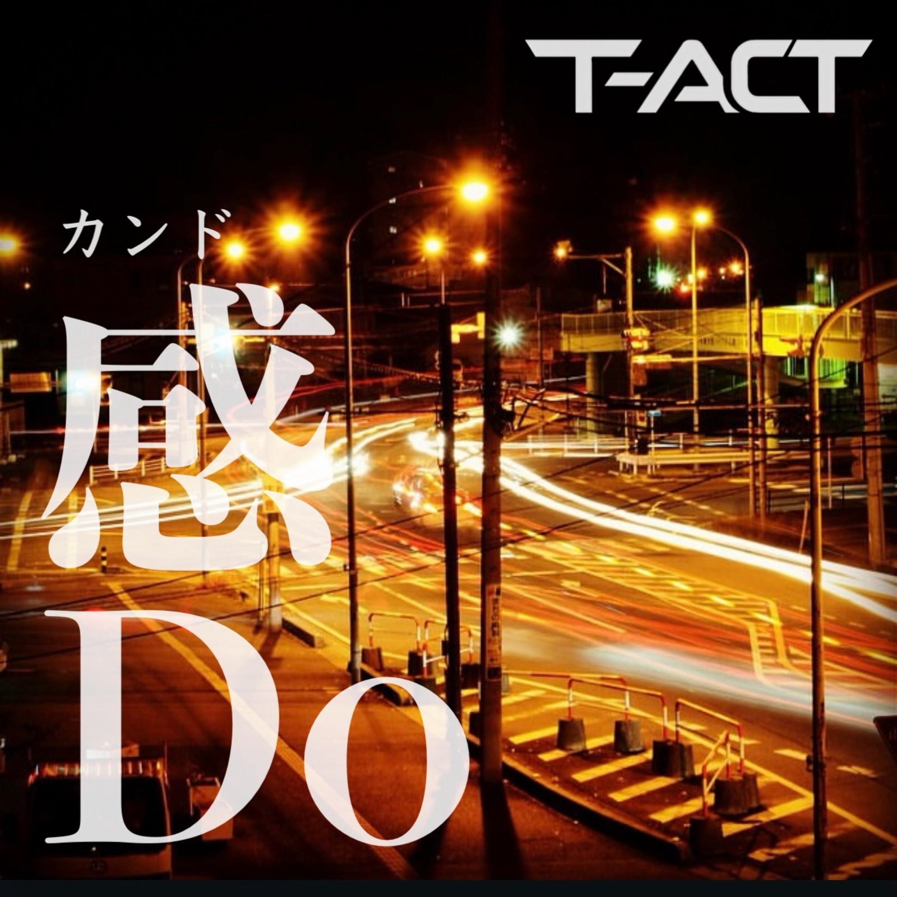
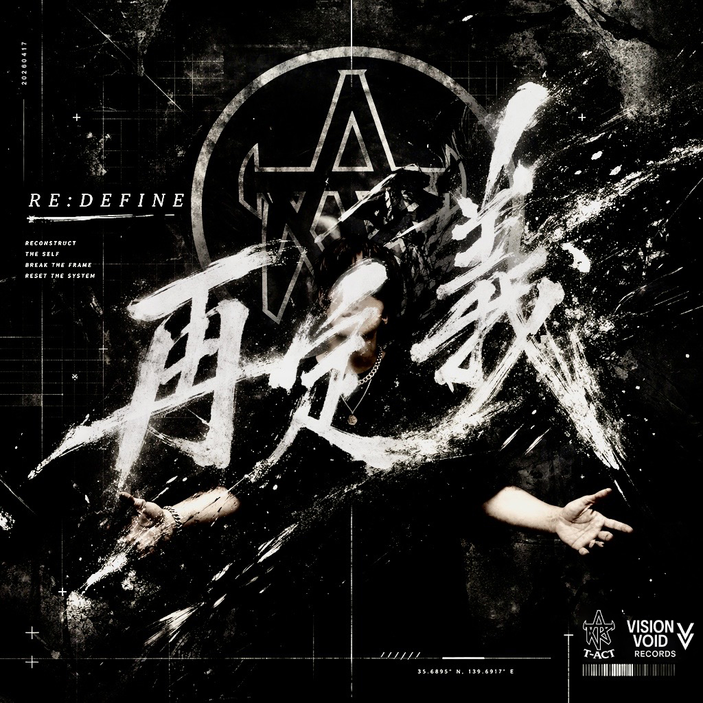
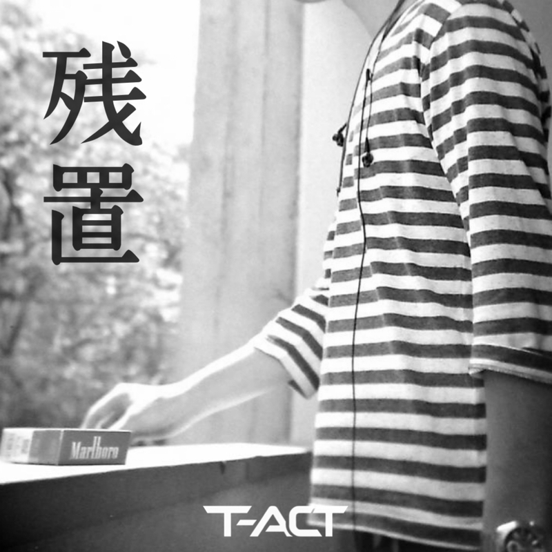
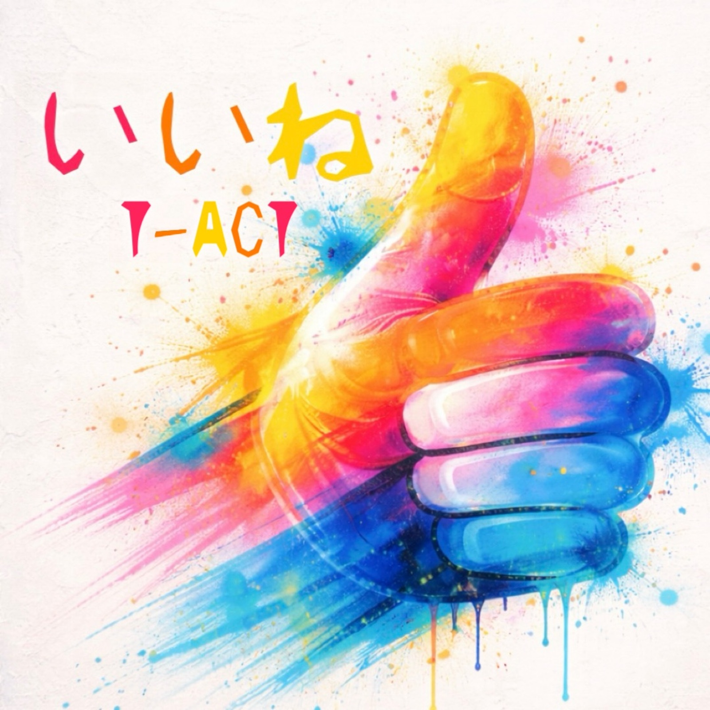
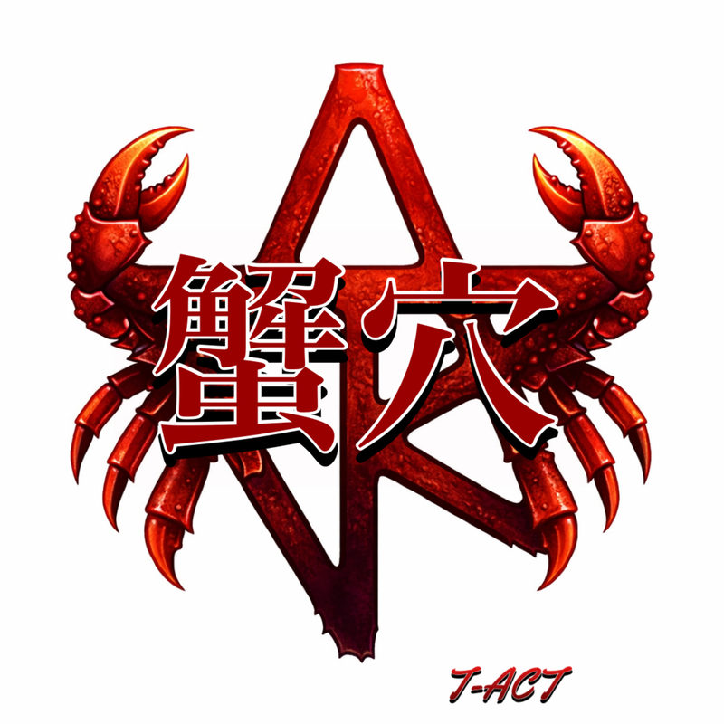
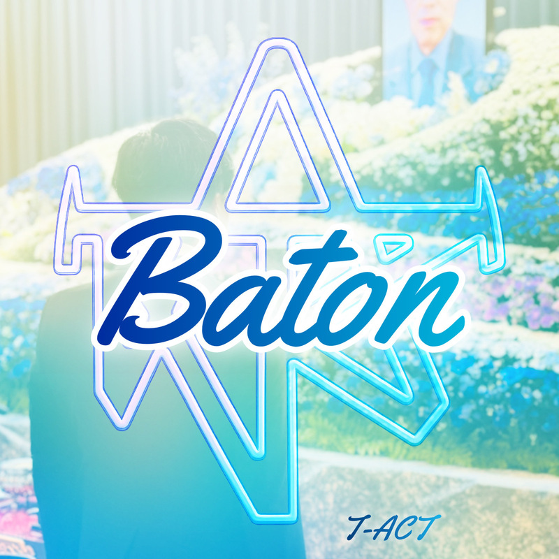

T-ACT – Still, I Be… (Official Music Video)
揺れながらも、自分の内側へ戻っていく。T-ACT × KONOMIによる「Still, I Be…」Official Music Video。
日本を拠点に、Chill / Hip-Hop / R&Bを軸に現実から音楽を立ち上げるインディペンデントアーティスト。
揺れても、戻れる。見慣れた街にも、まだ感Doがある。
昼は、構造をつくる
夜は、その重みを音に残す
逃避でも幻想でもない
現実から生まれた、チルでミニマルな音楽
「Still, I Be…」Official Music Video。ほかのMVもT-ACT公式YouTubeチャンネルで公開中です。
揺れながらも、自分の内側へ戻っていく。T-ACT × KONOMIによる「Still, I Be…」Official Music Video。
2026.07.23、二つの視点から生まれた最新作。
砂のように崩れそうな感覚の中で、それでも残り続ける鼓動と体温を描いた T-ACT × KONOMI のコラボレーション作品。不安に飲まれるのではなく、揺れながらも自分の内側へ戻っていく感覚を、静かに刻み込む。

見慣れた街の中で、名もなき誰かが静かに役割を果たしている。その姿に残る感度、感動、そしてDo。日常をただ通り過ぎず、まだ心が動く瞬間を拾い上げる T-ACT のChill Hip-Hop / Conscious Hip-Hop。
T-ACT / STATEMENT
記憶は薄れる
不確かなものになる
どう残すか
成功や承認のためではない
これは現実の中で生まれた思考と瞬間の記録
直近のリリースと重要なお知らせを掲載しています。
これまでの作品に残る温度、余白、視点のアーカイブ。
目立つことも、称賛されることもないまま、朝から現場を動かし続ける者の責任。人気では測れない重みと、支える側の現実を静かに刻みつける。

社会的に必要とされる責任を果たした上で、それでもなお残る表現の意味を問い直す作品。余剰として切り捨てられるものの中に、本当に捨てていいものがあるのかを静かに問い返す。

整えられた日常の奥に、置き去りのまま残っていた感情の輪郭をそっと拾い上げる作品。言葉を足しすぎず、消えきらなかった記憶の気配だけを静かに浮かび上がらせる。

反応が価値を決めるように見える時代のノイズの中で、自分の感覚を手放さないための一曲。賞賛にも無関心にも飲まれず、内側の温度を守ろうとする意思が流れている。

世界から身を引くためではなく、自分の輪郭を保ったまま踏ん張るための場所を描いた作品。小さな穴の中から見える景色にこそ、その人の哲学と生き方が滲む。

言葉にならないまま受け継がれてきた責任、期待、祈り。その重さを誇張せず、静かな推進力として描くことで、継承とは前へ進むための宿命でもあると語りかける。

数字や熱量が真実のように扱われる空気を切り裂き、見えているものと信じ込まされているものの境界を問い直す作品。冷たさの奥に、思考することへの執着がある。

痛みを劇的に叫ぶのではなく、濡れた視界のまま歩き続ける気配を描く。喪失のあとに残る静けさと、そこからもう一度立ち上がる微かな意思が同居している。

甘さだけでも、苦さだけでも語れない自分自身の複層性をそのまま映した作品。心地よさの中に少しだけ残る引っかかりが、T-ACTの感性を象徴している。
日本を拠点に、Chill / Hip-Hop / R&Bを軸に制作するインディペンデントアーティスト。

T-ACT は、日本を拠点に活動するインディペンデント音楽アーティスト。Chill、Hip-Hop、R&B、ミニマルな音像を軸に、現実の中で生まれる思考や瞬間を音楽として記録している。
音楽は、成功や承認のためだけではない。
日々の構造や責任に向き合う中で、言葉になりきらない沈黙や摩擦を、作品として残すための行為でもある。
歌詞は多くを語りすぎない。感情を直接的に説明するよりも、余白や痕跡として残す表現を重視している。聴き手がそれぞれの経験を重ねられる余地を、意図的に残している。
派手さよりも持続性を、正解よりも実感を大切にしながら、独立した立場で制作と発表を続けている。